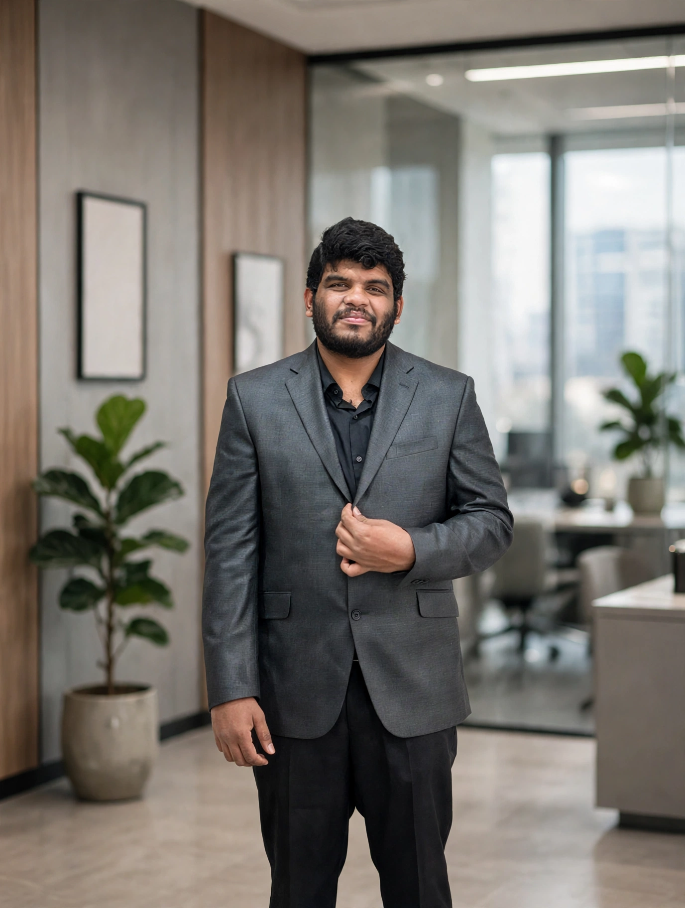

AI-Powered Fraud Detection Dashboard
Spring Boot microservices with Azure ML endpoints for real-time fraud detection and customer classification. Rule-based scorer, live dashboard, 200 seeded transactions, 5 tests passing.
Featured Project · Personal Project
Spring Boot microservices with Azure ML endpoints for real-time fraud detection and customer classification.
Sai Suhas Kodumuru — Senior Java Full Stack Developer, AI / LLM Applications. 8+ years building enterprise web applications. Currently at the Ohio Department of Job and Family Services, working remotely from Cincinnati, OH. Open to Senior Java Full Stack roles.

Personal projects — built, tested and shipped on GitHub, with a written case study each.
Spring Boot microservices with Azure ML endpoints for real-time fraud detection and customer classification. Rule-based scorer, live dashboard, 200 seeded transactions, 5 tests passing.
Document-aware chatbot using LangChain, RAG pipelines and Azure OpenAI (GPT-4) for intelligent customer support. Real FAISS vector store, 8 seeded support docs, 6 tests passing.
Complete architectural overhaul of a personal portfolio with glassmorphism UI, an interactive skills explorer and responsive layout. 17 tests passing.
Java 21 services with virtual threads for concurrent ML model inference. Real logistic-regression fraud model, batch inference, latency stats. Measured 1,019 req/s at 100 concurrent requests, 0 errors. 11 tests passing.
Five seasons, 8+ years — from health care in Hyderabad to public-sector modernisation in Ohio.
Ohio Department of Job and Family Services · Contract
Jun 2026 – Present · Remote, Cincinnati, OH
Rebuilt HCL Volt MX Iris screens as Angular apps for the Share Portal, Child Support, Rapid Response and Ohio LMI, with Spring Boot back ends, OAuth2 / JWT security, AKS deployment and Section 508 / WCAG accessibility.
Verizon · Contract
Feb 2024 – May 2026 · Remote, Chicago, IL
Fraud detection and customer classification as Spring Boot microservices calling Azure ML in real time; LLM features with Azure OpenAI (GPT-4); agentic support workflows with LangChain and RAG. Model latency cut by more than half with Java 21 virtual threads.
Truist Financial Corporation · Contract
Feb 2023 – Feb 2024 · On-site, Atlanta, GA
Transaction classification and fraud analytics as Spring Boot microservices; fraud dashboards in Angular 17 with a LangChain / FAISS virtual assistant; migrated services from Java 8 to Java 17.
Northern Trust Bank · Contract
Mar 2022 – Feb 2023 · Hybrid, Chicago, IL
Banking web screens and services in Java / J2EE, Spring Boot and Angular, REST endpoints backed by Oracle, messaging with JMS / IBM MQ, and multithreading for fan-out requests.
SS&C Health · Full-time
May 2018 – Dec 2021 · On-site, Hyderabad, India
Health-care web apps in Spring Boot and Angular / React, REST microservices, data in Oracle and MongoDB, running on AWS with Docker, Lambda and EKS, and CI/CD with Jenkins and Maven.
Search or filter by category — every skill is from real project and work experience.
No skills match that search. Try another term.
The ten technologies I reach for most on current work.
Microsoft Azure, current.
Microsoft — Azure AI Engineer Associate (AI-102), covering Azure AI and Azure OpenAI solutions.
Microsoft — Azure Data Fundamentals (DP-900), covering core data concepts and Azure data services.
Senior Java full stack developer with 8+ years building enterprise web applications in Java, Spring Boot, Angular and React. I have worked on public sector, banking and health care systems — currently modernising Job and Family Services apps at the Ohio Department of Job and Family Services.
I add LLM features to existing products with Azure OpenAI (GPT-4) — summarisation, classification and document chat — and build RAG and agentic workflows with LangChain, Azure Cognitive Search and FAISS, with guardrails and handoff to a person when needed. I use AI tools across the development cycle, including GitHub Copilot for code and tests, and review the output like any other code.
I move data through Kafka, SQS and Spark for real-time and batch work, and ship services on AWS and Azure with Docker, Kubernetes, Helm and Terraform, with CI/CD through Jenkins, GitHub Actions and Azure DevOps. I own work end to end, from design and APIs through deployment, monitoring and fixing production issues.
Open to work: Senior Java Full Stack Developer roles — full-time or contract, remote from Cincinnati, OH.
Want to talk about a Senior Java Full Stack role, an AI / LLM project, or one of the projects above? Reach me here: